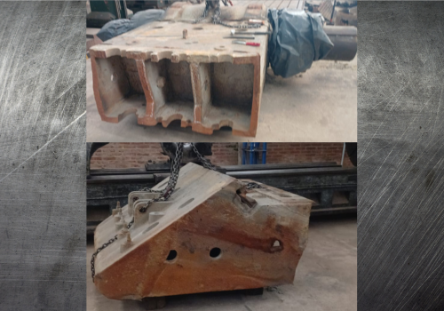
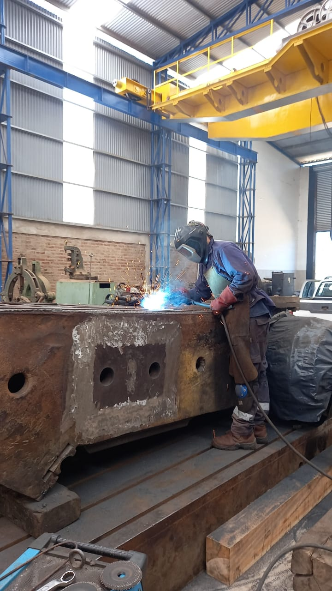
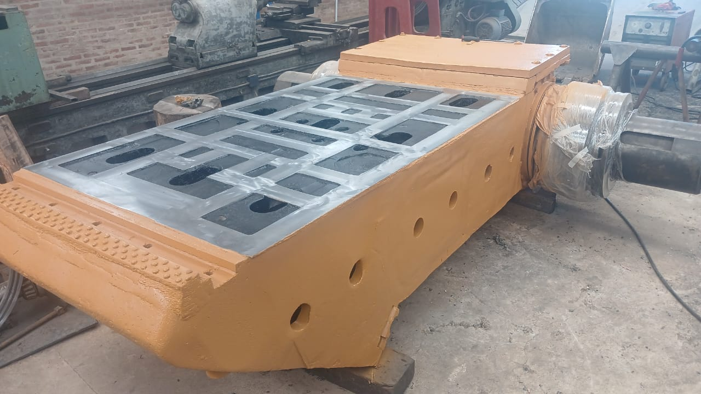
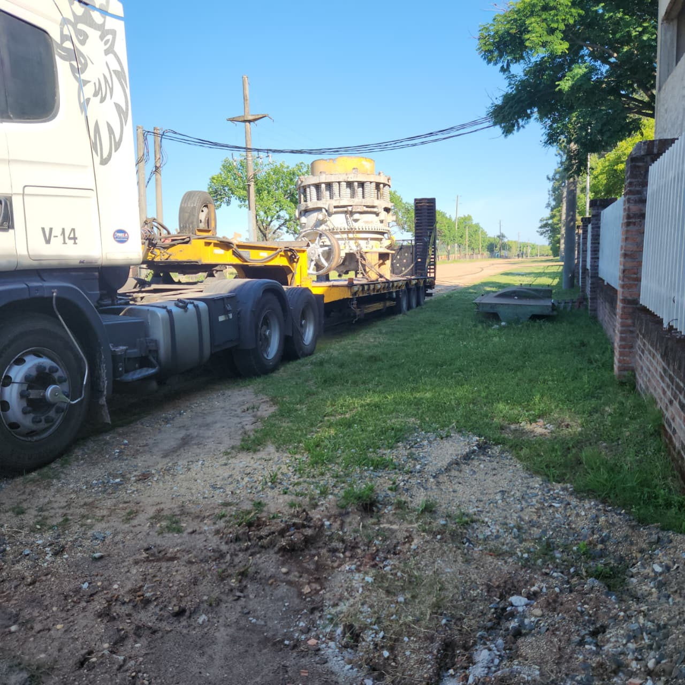
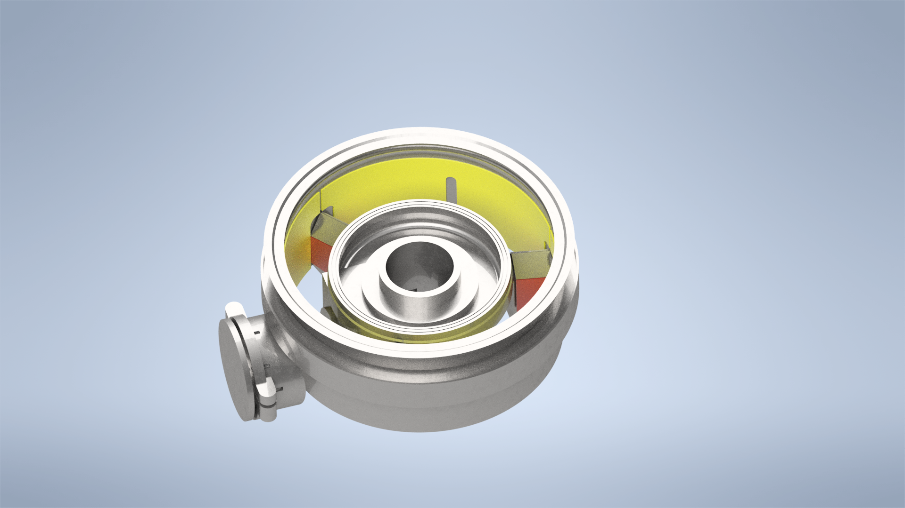
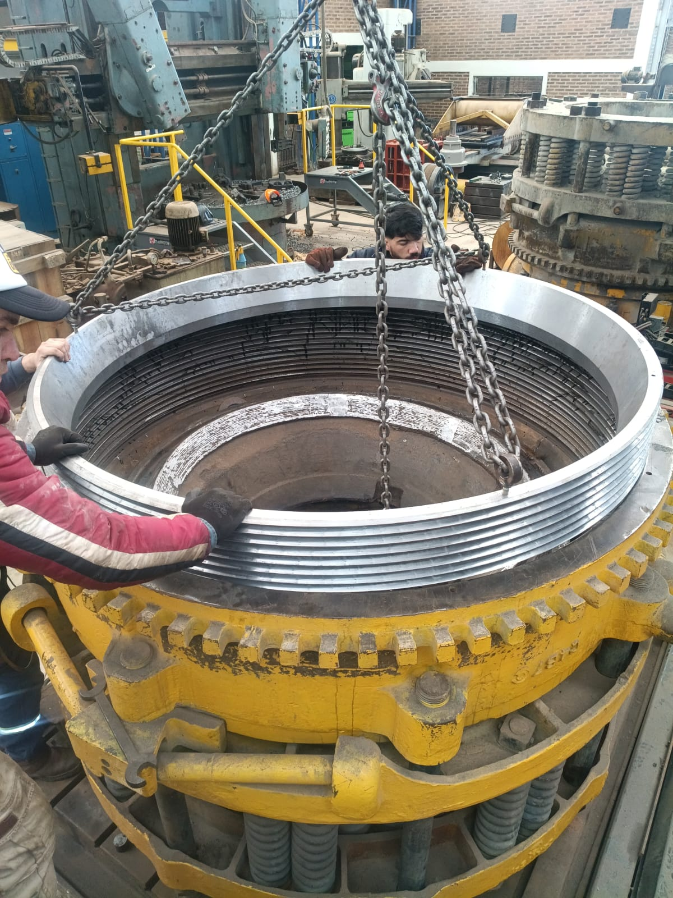
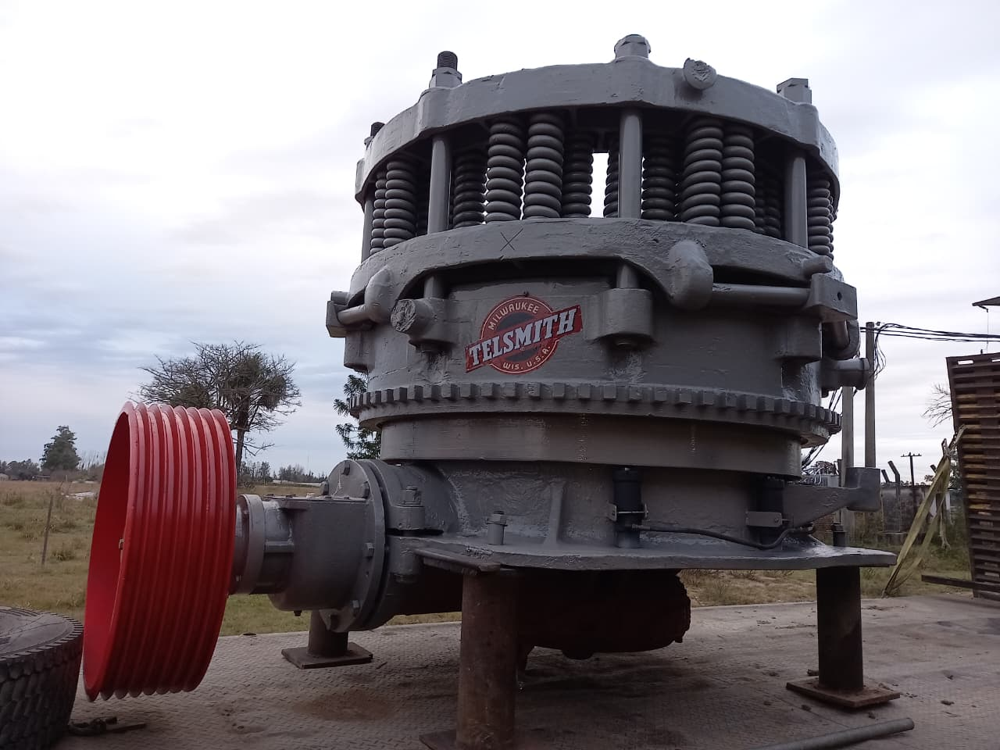
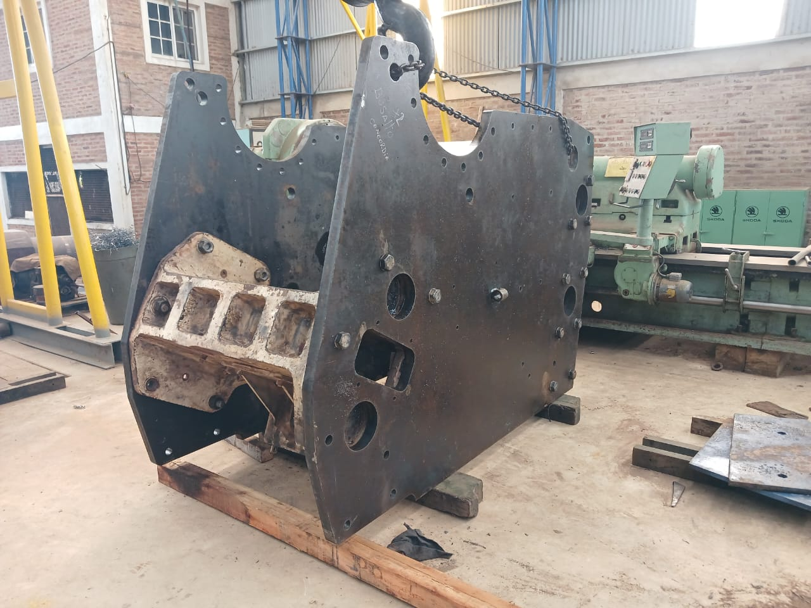
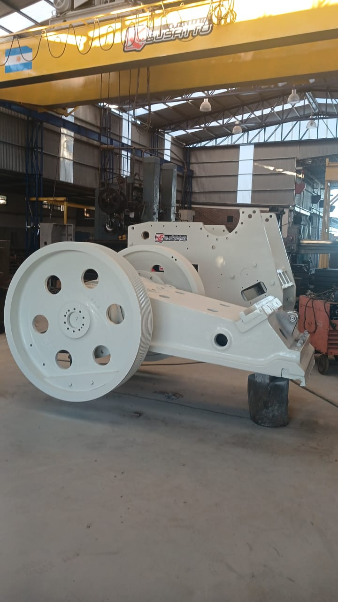

Mecanizado Pesado
Fabricación y mecanizado de piezas de grandes dimensiones con alta precisión.
Mecanizado pesado, soldadura, reparación, ingeniería y montaje industrial para equipos y componentes de gran porte.
Metalúrgica Busatto es una empresa especializada en mecanizado pesado, soldadura, relleno y reparación de componentes, diseño e ingeniería. Brindamos soluciones integrales para la industria combinando experiencia técnica, precisión y compromiso con la calidad.
Fabricación y mecanizado de piezas de grandes dimensiones con alta precisión.
Soldadura de estructuras, equipos y componentes industriales.
Recuperación dimensional y reparación de piezas desgastadas.
Planos, modelado CAD y desarrollo de soluciones mecánicas industriales.



Evaluación inicial del componente, identificación de desgaste y planificación de reparación.

Mecanizado pesado, soldadura, rectificado y control dimensional.

Equipo recuperado listo para volver a producción.

Evaluación inicial del componente, identificación de desgaste y planificación de reparación.

Modelado para fabricación de piezas de repuesto, por ejemplo las placas de protección.

Mecanizado pesado, soldadura, rectificado y control dimensional.

Equipo recuperado listo para volver a producción.

Evaluación inicial del componente, identificación de desgaste y planificación de reparación.

Mecanizado pesado, soldadura, rectificado y control dimensional.

Equipo recuperado listo para volver a producción.
Intervenciones en equipos industriales, canteras, centrales y plantas de proceso, minimizando tiempos de parada y evitando desmontajes innecesarios.
.jpeg)
.jpeg)
.jpeg)
Visualice diseños y componentes industriales desarrollados por Metalúrgica Busatto mediante modelos tridimensionales interactivos.
Diseño y reparación de componentes para equipos de trituración.
Componente de zaranda reparado y relevado para fabricación
Relevamiento para fabricacion de piezas de valvula rotativa
Cada pieza y cada proceso se controlan con criterios técnicos estrictos, sin lugar para la improvisación.
Años de trabajo con equipos y componentes de gran porte respaldan cada solución que entregamos.
Desde el diseño hasta el montaje final, acompañamos todo el proceso bajo un mismo equipo de trabajo.
Comunicación clara y plazos cumplidos, para que cada proyecto avance con tranquilidad y previsibilidad.
Fabricamos, reparamos, diseñamos y montamos componentes industriales de gran porte con el respaldo técnico de Metalúrgica Busatto.
Solicitar Asesoramiento Técnico